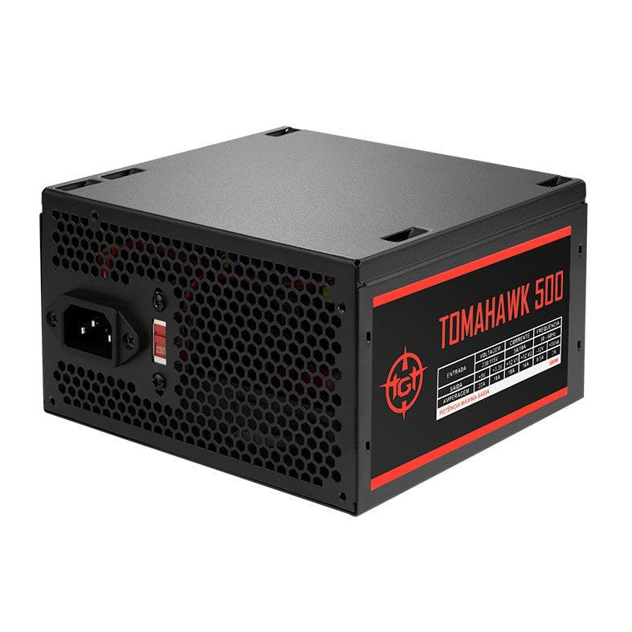
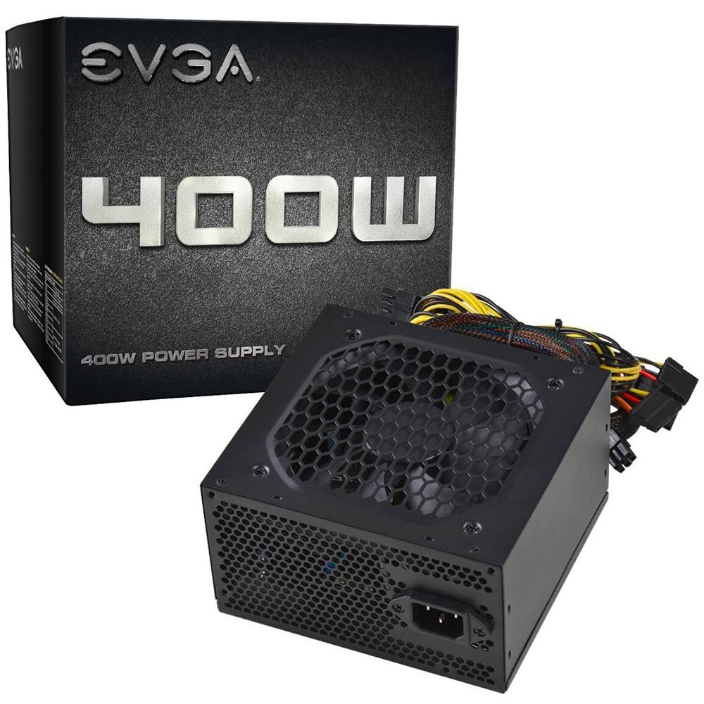

Fiote Hardware

Fiote Hardware
A função da fonte de computador é converter a corrente alternada do soquete em corrente contínua (CA) que já está na tensão correta usada pelo componente. Depois do UPS ou do estabilizador, também pode ser a última linha de defesa contra picos de tensão e instabilidade de corrente. Embora as fontes quase sempre sejam reduzidas ao segundo plano, a fonte é outra parte importante dos computadores modernos, pois consomem cada vez mais energia. Na década de 486, as fontes mais vendidas eram de 200 watts ou menos, enquanto as fontes de alimentação atuais são de 450 watts. Existem também as fontes de maior capacidade, especialmente para usuários que desejam usar duas placas SLI 3D de última geração que fornecem até 1000 watts de potência.
FONTE TGT TOMAHAWK 500W

Fonte Corsair CV550, 550W 80 Plus Bronze

Fonte EVGA 400W

Fiote Hardware
Fiote